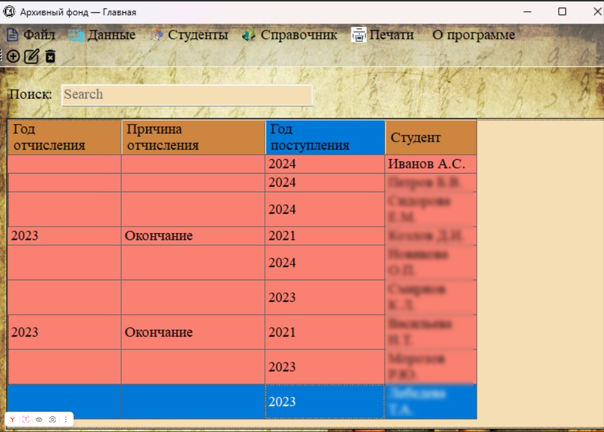
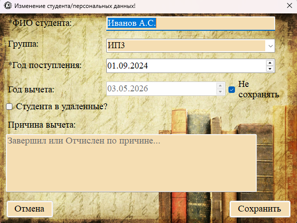
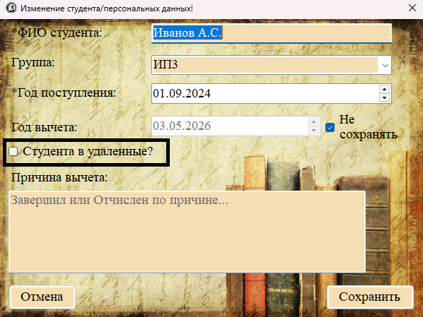
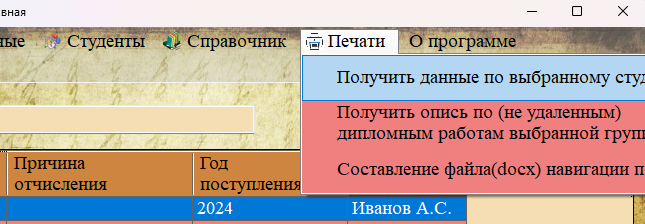

Раздел «Персональные файлы» (меню «Студенты → Персональные файлы») хранит личные дела студентов. Согласно правилам архивного делопроизводства, личные дела отчисленных студентов хранятся 75 лет.

Рис. 1. Таблица раздела «Персональные файлы»
Отображаемые поля (колонки таблицы)

| Название колонки | Описание |
|---|---|
| Год отчисления | Год, когда студент был отчислен или окончил обучение. |
| Причина отчисления | Текстовая причина отчисления (например: «завершил обучение», «отчислен по собственному желанию»). |
| Год поступления | Год зачисления студента в учебное заведение. |
| Студент | ФИО студента. |
Особенности хранения личных дел
В архиве личные дела физически хранятся следующим образом:
— Отчисленные по причине окончания техникума — сгруппированы по названиям групп, из которых выпускались.
— Отчисленные по иным причинам — сгруппированы отдельно.
Добавление и редактирование персонального файла
Отдельного окна для добавления только персонального файла нет. Личное дело создаётся одновременно со студентом (см. раздел 2.2.1). При редактировании студента также можно изменить данные личного дела.

Рис. 2. Редактирование личного дела (данные о поступлении, отчислении)
Удаление персонального файла
Если личное дело больше не требуется (срок хранения 75 лет истёк), его можно переместить в раздел «Удалённые персональные файлы» (см. 2.2.3) с помощью чекбокса «Студента в удаленные?» при редактировании.

Рис. 3. Чекбокс «Студента в удаленные?» в форме редактирования
Печать личного дела
Для печати личного дела (заполнение шаблона) используется функция «Печати → Получить данные по выбранному студенту». Подробнее — в разделе 2.5.1.

Рис. 4. Вызов печати личного дела из меню «Печати»